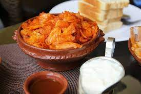

Chechebsa

Description
Chechebsa (sometimes called Kita Fir Fir in Ethiopia) is a classic breakfast dish that starts with preparing a batter that’s fried to make a large flatbread called Kita.
Ingridients
- 1 Tbsp oil, for frying
- 1 1/4 cups all-purpose flour (or 1 cup all-purpose flour and 1/4 cup teff flour)
- 1/2 tsp salt
- 3/4 cup water (more or less, as needed for consistency)
- 4 Tbsp niter kibe (ethiopian Purified butter)
- 2 tsp berbere
Steps
- Heat oil in a large skillet or griddle.
- Whisk together the flour and salt. Add 1/2 cup water and keep whisking, adding 2 Tbsp more water at a time as needed, and whisking until smooth and the consistency is like a thin pancake batter. Pour the batter into the hot skillet over medium heat. Use the back of a wooden spoon to spread the batter into a single layer to form a large pancake. Cook 2 to 4 minutes or until bottom is lightly browned. Flip the Kita, and cook other side another 1 to 2 minutes or until lightly browned and cooked through. Set the cooked Kita aside for a few minutes, to cool.
- Tear the Kita into small (about 1 inch) pieces.
- Add niter kibbeh and berbere to a large skillet, and stir until melted. Add the torn Kita to the skillet and stir well with a wooden spoon until all the pieces are well coated with the spicy butter. Cook for several minutes, or until heated throughout. It should be moist but not mashed (more like the consistency of a savory bread pudding or a moist bread-based stuffing). Spoon into individual bowls and serve immediately with a spoon while still warm. (Some like to top it with a spoonful of yogurt and a pinch of berbere sprinkled over the yogurt, but that's purely optional.)